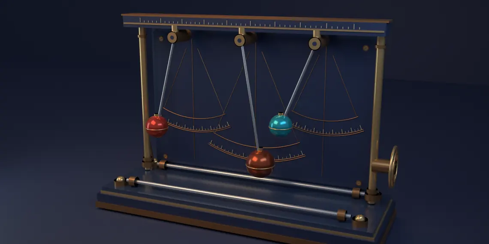
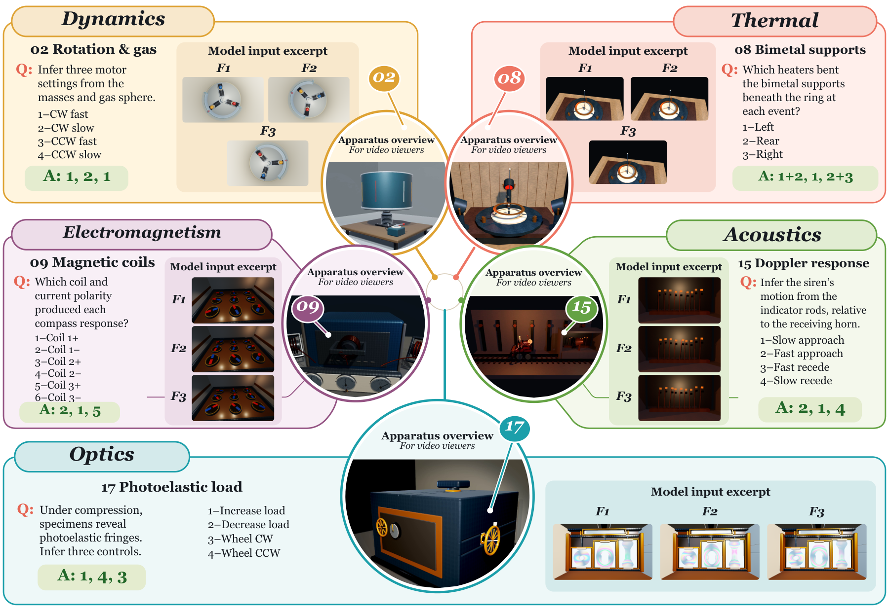
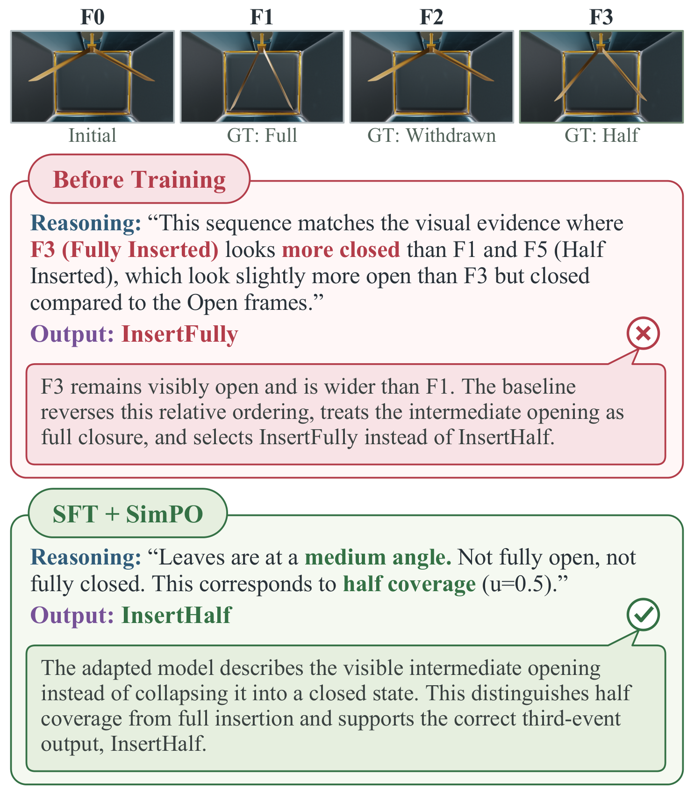
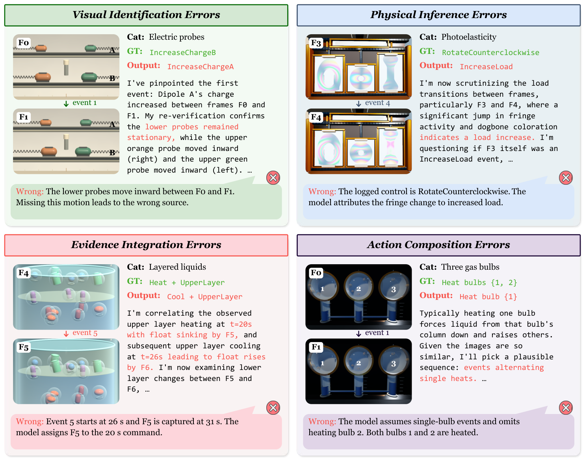

CaveBench: Benchmarking Abductive Physical Reasoning from Internal Observations
What moved the pendulums?
Identify six carriage motions from seven views inside the apparatus.

Playback unavailable. Open the MP4
Tsinghua University * Equal contribution · † Corresponding author
Dataset
Each question pairs a sequence of interior images with an apparatus description and a list of possible external controls. The model selects the controls applied between each pair of consecutive images.
- Apparatuses
- 20
- Physical domains
- 5
- Test questions
- 1,180
The dataset contains 9,000 training, 1,000 validation and 200 test episodes. Test questions span one to six events.
Test set composition by domain
| Domain | Apparatuses | Episodes | Questions | Single-label events | Two-label events |
|---|---|---|---|---|---|
| Dynamics | S01–S04 | 40 | 240 | 140 | 100 |
| Thermal physics | S05–S08 | 40 | 240 | 68 | 172 |
| Electromagnetism | S09–S12 | 40 | 220 | 203 | 37 |
| Acoustics | S13–S16 | 40 | 240 | 108 | 132 |
| Optics | S17–S20 | 40 | 240 | 179 | 61 |
In the ten dielectric-response episodes (S11), the first three events show the dielectric fully inserted, partly inserted and withdrawn, in varying order. Questions for this apparatus start at three events. The test set therefore has 190 questions at each of the first two lengths and 200 at each length from three to six.
Case studies
Download editable slidesBrowse all 20 apparatuses
Benchmark overview

Construction and evaluation

Physical design and example questions


Leaderboard
A sequence is correct when the model identifies every control at every event in chronological order. Controls applied together can be listed in any order.
Detailed tables
Analysis
From one event to six
All 27 model configurations score lower on six-event questions than on single-event questions. Gemini 3.8 Flash drops from 60.5% to 21.5%, and MiniMax M3.1 Flash drops from 38.4% to 12.5%.
The strongest domain varies by model. On six-event questions, MiniMax M3.1 Flash achieves its best score in electromagnetism (27.5%). For GPT-6.1 Sol and Terra, electromagnetism has the lowest scores (57.5% and 37.5%), and thermal physics has the highest (80.0% and 85.0%).
Learning to recover a sequence
Supervised fine-tuning raises Qwen3.5-9B’s six-event accuracy from 0.5% to 20.0%. Across two training seeds, SimPO and KTO achieve similar single-event accuracy (86.8% and 86.3%). At six events, SimPO reaches 31.8% and KTO scores 14.5%.
On the 40 six-event dynamics questions, SFT recovers 10 complete sequences. The two SimPO runs recover 16 and 17. Across all five domains, each run solves 27 sequences that SFT missed. Compare runs on the same questions.


Reasoning effort
Across the same 200 six-event questions, GPT-6.1 Sol recovers 119 full sequences at low reasoning effort (59.5%) and 148 at high effort (74.0%). Gemini 3.8 Flash drops from 31 complete sequences (15.5%) to 16 (8.0%).

Error analysis
We classified 100 incorrect six-event answers by their main error. In 38, the model misread a visual cue. In 31, it failed to combine evidence across observations. The other errors involved the physical reasoning in 24 answers and the choice of controls to report together in seven.

